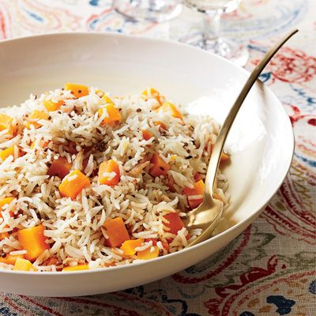

Butternut Squash Basmati Rice

Spiced, roasted butternut with fragrant basmatic rice and fresh herbs
makes for a filling and delicious vegetarian feast.
Butternut Squash Rice Casserole is a warm and cozy Fall meal that's
very easy to make and it's packed full of flavor and texture.
It's a great dish to serve to a crowd, and you can choose to serve it
as a main course or a side dish.
What you will need to make Butternut Squash Basmati Rice
Ingredients
- 1 tbsp. unsalted butter
- 1 tsp. whole cumin seeds
- 1 tsp. mustard seeds
- 1 c. basmati rice
- 3/4 lb. butternut squash
- 2 c. water
- 2 tsp. kosher salt
Directions
-
In a medium saucepan, melt the butter. Add the cumin and mustard seeds
and cook over high heat until the mustard seeds begin to pop, about 30
seconds. Add the rice and diced squash and stir to coat with the butter.
Add the water and salt and bring to a boil. Cover and cook over very low
heat until the squash is tender and the water is completely absorbed,
about 15 minutes. Remove from the heat and let the rice stand, covered,
for 5 minutes. Fluff the rice with a fork and serve right away.
Back to Home